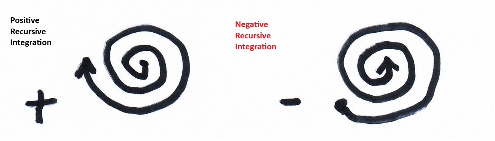
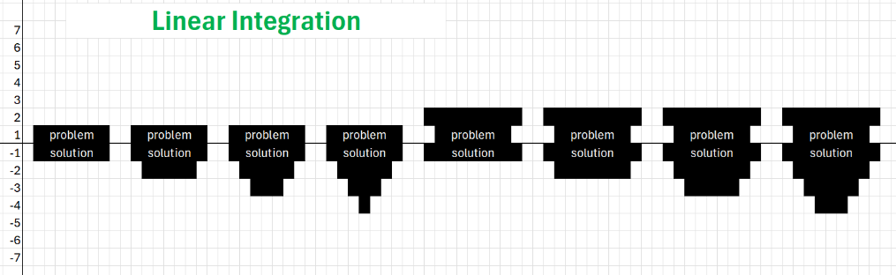
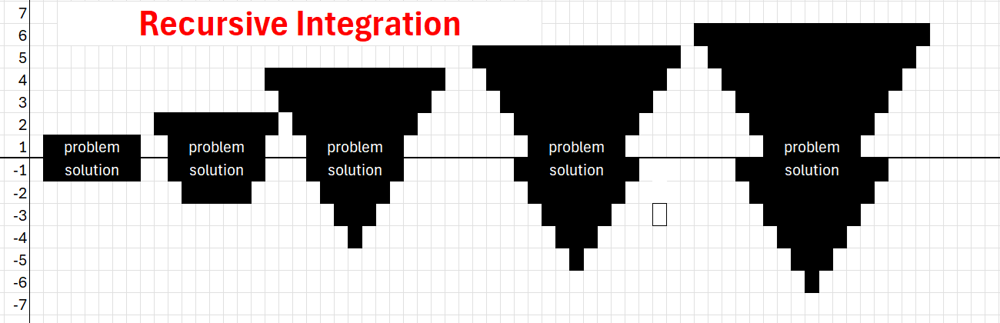
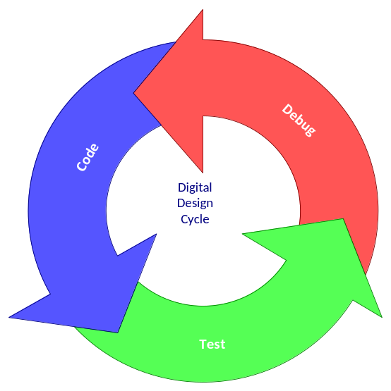
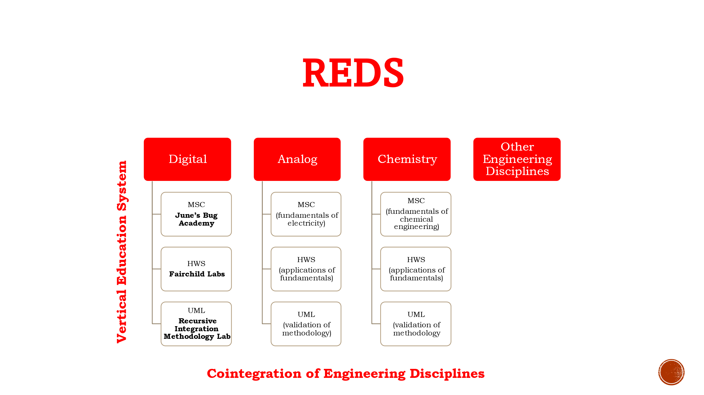

RIM — Recursive Integration. The hypothesis is that the information determining whether a design works is present early, and the flow destroys it systematically at every hand-off between tools. The answer is to stop hand-off translation loss by making the hand-off unnecessary.
Positional truth — the territory as it actually is. The registry.
The predictive account — a story about the territory.
Running Map and Model at once — that is the method.
A system is an implementation of a methodology. BigMo is one; other hosts are others.
What convergence accumulates. Institutionalised, this is REDS.
Each position strictly requires the one before it — the order is a dependency chain, not a list.
The head is the tail's output. Position 4 is the only position that can be built, and what it builds is another turn's positions 1 and 2 — so a RIM design is not like a RIM instance, it is one. The dashed amber edge is what stops this being a loop: without position 5 the second turn would be a copy of the first, and the climb in rate of recursion would be flat.
| Level | Positions | Instances here | Where it lives |
|---|---|---|---|
| 1 | Methodology | RIM⁵ | served beside this page |
| 2 | Machine | BigMo | ~/scoot + ~/.scoot-rim/, on the host dreamlab |
| 3 | Map + Model, one turn down | Scoot(34) - The Dream Laboratory | scoot/ri/src/, per-Scoot |
"The registry is the model is the authority is the registry." With Map holding positional truth and Model holding the predictive account, this stops being a tautology and becomes a falsifiable claim: the two must be the same artifact. Two engineers keeping them separately is the failure the Shafted opening depicts.
RIM⁵ names positions; Recursive Integration names the motion through them. These are the original drawings from the methodology, reproduced as drawn — the vocabulary the five positions are built on.

Positive unwinds outward — expanding scope, solving more or different problems. Negative winds inward — making the solution smaller, faster, more efficient. Mathematical signs, not value judgments. In RIM⁵ terms these are the two directions position 3 runs at once: architecture pushes outward while design pulls inward, and refusing to choose between them is the method.

One direction per iteration. Each pass either deepens the solution or widens the problem, never both — problem → solution → problem → solution, flat and alternating. Eight iterations here and the shapes stay small: the scope you can reach is bounded by the direction you happened to pick.

Both directions, every iteration, each one leveraging what the last learned. Five iterations reach further than the eight beside them — compound acceleration rather than addition. This is the shape the whole pattern is an argument for, and the reason rate of recursion is the quantity REDS measures.

Code → Test → Debug, repeat. The unit of iteration, and the thing the spirals are made of. We learn more from the shots we miss than the ones we make, so the faster this ring turns the larger the problem it can resolve — which is what the machine at position 4 exists to accelerate.

Position 5 institutionalised. The vertical axis carries a student up through the tiers; the horizontal axis carries the method across disciplines. Note the digital UML tier's own name — Recursive Integration Methodology Lab — which is where Methodology is attested in the corpus rather than coined.
| Piece | Position | Where |
|---|---|---|
| scoot-rim-agentd | 4 - a machine's supervisor of sessions | ~/scoot-rim-agentd, installed 2026-09-08 |
| REDS | 5 - Mindset institutionalised; governs the rate of recursion | methodology, host-independent |
| Scoot platform | 4 - the substrate Scoot(34) runs on | ~/scoot |